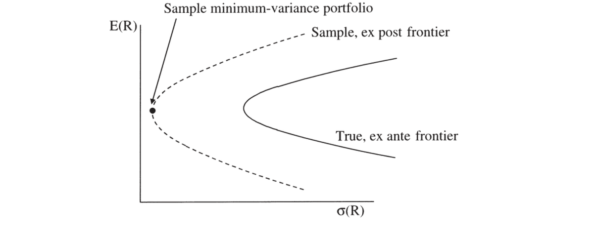
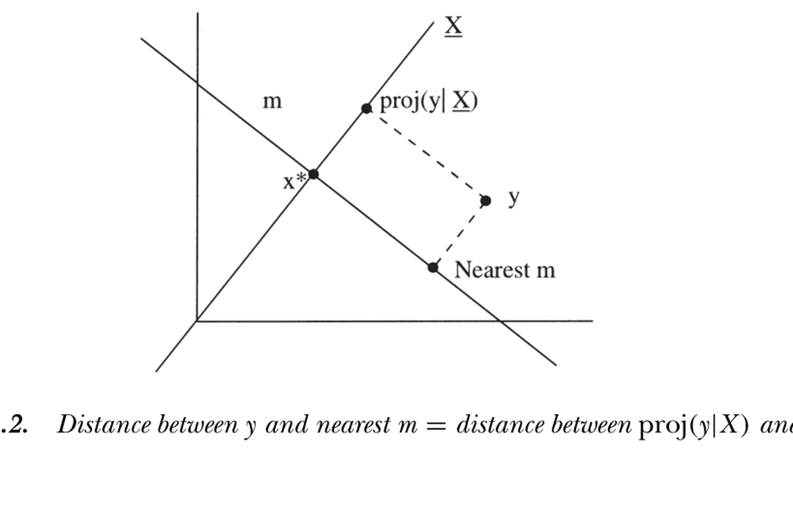

11. GMM: General Formulas and Applications
11. GMM: General Formulas and Applications
本章导读 本章（Cochrane 第 11 章）给出 GMM 的一般框架与五类应用。核心是两条主公式：设 \(a_Tg_T(\hat b)=0\) 定义估计，则系数协方差 \(T\operatorname{cov}(\hat b)=(ad)^{-1}aSa'(ad)^{-1\prime}\)、矩协方差 \(T\operatorname{cov}(g_T)=(I-d(ad)^{-1}a)S(I-d(ad)^{-1}a)'\)。很多计算就是巧妙地选取选择线性组合的 \(a\) 矩阵、再读出这两条公式。§11.1 一般公式（含模型比较的 χ² 差检验）；§11.2 检验单个/一组定价误差；§11.3 用 delta 方法求任意量的标准误；§11.4 把 OLS 映入 GMM（导出修正自相关/异方差的标准误）；§11.5 预设加权矩阵（为何不总用"有效"的 \(S^{-1}\)：经济意义、稳健性、模型可比性）；§11.6 一组矩估计、另一组检验；§11.7 估计谱密度矩阵 \(S\) 的实操要点。
11. GMM: General Formulas and Applications
Overview This chapter (Cochrane Ch 11) lays out the general GMM framework and five applications. The core is two master formulas: with \(a_Tg_T(\hat b)=0\) defining the estimate, the coefficient covariance is \(T\operatorname{cov}(\hat b)=(ad)^{-1}aSa'(ad)^{-1\prime}\) and the moment covariance is \(T\operatorname{cov}(g_T)=(I-d(ad)^{-1}a)S(I-d(ad)^{-1}a)'\). Many calculations are just clever choices of the \(a\) matrix selecting which linear combination of moments to set to zero, then reading off these two formulas. §11.1 general formulas (with a χ²-difference test for model comparison); §11.2 testing individual/groups of pricing errors; §11.3 standard errors of anything via the delta method; §11.4 mapping OLS into GMM (deriving autocorrelation/heteroskedasticity-corrected standard errors); §11.5 prespecified weighting matrices (why not always the "efficient" \(S^{-1}\): economic meaning, robustness, model comparability); §11.6 estimating on one group of moments, testing on another; §11.7 practicalities of estimating the spectral density matrix \(S\).
11.1 一般 GMM 公式 / General GMM Formulas
把模型写成 \(E[f(x_t,b)]=0\)（\(f\) 是 \(L\) 维矩、\(x_t\) 是数据、\(b\) 是 \(N\) 个参数，推广上章的 \(u_t(b)\)）。GMM 估计：选 \(\hat b\) 使某线性组合 \(a_Tg_T(\hat b)=0\)，其中 \(g_T(b)=\tfrac1T\sum_t f(x_t,b)\)。上章的最小化是特例：\(\min_b g_T'Wg_T\) 的一阶条件即 \(a_T=\partial g_T'/\partial b\,W\)。
11.1 General GMM Formulas
Write the model as \(E[f(x_t,b)]=0\) (\(f\) an \(L\)-vector of moments, \(x_t\) data, \(b\) an \(N\)-vector of parameters, generalizing \(u_t(b)\)). The GMM estimate: pick \(\hat b\) so some linear combination \(a_Tg_T(\hat b)=0\), where \(g_T(b)=\tfrac1T\sum_t f(x_t,b)\). The last chapter's minimization is a special case: the first-order condition of \(\min_b g_T'Wg_T\) is \(a_T=\partial g_T'/\partial b\,W\).
两条主公式（Hansen 1982） / The two master formulas (Hansen 1982)
设 \(d\equiv E[\partial f/\partial b'] = \partial g_T/\partial b'\)，\(a\equiv\operatorname{plim}a_T\)，\(S\equiv\sum_{j=-\infty}^{\infty}E[f(x_t,b)f(x_{t-j},b)']\)。则
系数分布：\(\sqrt T(\hat b-b)\to N\bigl(0,(ad)^{-1}aSa'(ad)^{-1\prime}\bigr)\)；
矩分布：\(\sqrt T g_T(\hat b)\to N\bigl(0,(I-d(ad)^{-1}a)S(I-d(ad)^{-1}a)'\bigr)\)（奇异，因每个样本里把某些 \(g_T\) 的线性组合置零）。
有效估计 \(a=d'S^{-1}\) 时简化为 \(T\operatorname{cov}(\hat b)=(d'S^{-1}d)^{-1}\)，且 \(TJ_T=Tg_T'S^{-1}g_T\to\chi^2(\#\text{moments}-\#\text{params})\)。With \(d\equiv E[\partial f/\partial b'] = \partial g_T/\partial b'\), \(a\equiv\operatorname{plim}a_T\), \(S\equiv\sum_{j=-\infty}^{\infty}E[f(x_t,b)f(x_{t-j},b)']\):
Coefficient distribution: \(\sqrt T(\hat b-b)\to N\bigl(0,(ad)^{-1}aSa'(ad)^{-1\prime}\bigr)\);
Moment distribution: \(\sqrt T g_T(\hat b)\to N\bigl(0,(I-d(ad)^{-1}a)S(I-d(ad)^{-1}a)'\bigr)\) (singular, since each sample sets some linear combinations of \(g_T\) to zero).
For the efficient estimate \(a=d'S^{-1}\) this reduces to \(T\operatorname{cov}(\hat b)=(d'S^{-1}d)^{-1}\), and \(TJ_T=Tg_T'S^{-1}g_T\to\chi^2(\#\text{moments}-\#\text{params})\).
\(a=d'S^{-1}\) 之"有效"在于：任意 \(a\) 的系数方差 (11.4) 等于有效估计方差 (11.8) 加一个半正定矩阵——故在"把不同线性组合置零"的估计类中方差最小（基于其他矩的估计可能更有效）。χ² 检验可直接用非奇异的 \(S^{-1}\)：\(Tg_T'S^{-1}g_T\to\chi^2\)（仅对最优权适用；其他权须用一般式 (11.4)、(11.5) 并伪逆奇异协方差阵）。
模型比较。 若一个模型是另一个的"受限"特例，用同一个 \(S\)（通常取无约束模型的），则受限 \(J_T\) 必上升；若受限模型为真则不应升"太多"：
\(a=d'S^{-1}\) is "efficient" because the coefficient variance for any \(a\) (11.4) equals the efficient variance (11.8) plus a positive semidefinite matrix — smallest among estimators that set linear combinations to zero (estimators based on other moments may be more efficient still). The χ² test can use the nonsingular \(S^{-1}\) directly: \(Tg_T'S^{-1}g_T\to\chi^2\) (only for the optimal weights; other weights need the general formulas (11.4), (11.5) and a pseudo-inverse of the singular covariance).
Model comparison. If one model is a "restricted" case of another, using the same \(S\) (usually the unrestricted model's), the restricted \(J_T\) must rise; if the restricted model is true it should not rise "much":
$$TJ_T(\text{restricted})-TJ_T(\text{unrestricted})\sim\chi^2(\#\text{restrictions}).$$
这是 Newey-West (1987a) 的"χ² 差检验"（D 检验），类似似然比检验。
11.2 检验定价误差 / Testing Moments
想看模型在特定资产/定价误差上的表现（如著名的"小公司效应"：无条件 CAPM 在最小市值组合上定价差）。\(g_T\) 的各元就是定价误差，其抽样分布 (11.5) 给出标准误，可对单个 \(g_T\) 做 \(t\) 检验、对一组做 χ² 检验，也可为"预测 vs 实际平均收益"图加误差棒。或用 χ² 差检验：把待检验的矩置零、用同一 \(S\) 重估，二者目标之差 \(\sim\chi^2(\#\text{eliminated moments})\)。注意陷阱：不要从 10 个定价误差里挑最大的那个、说它超过两倍标准差——最大者的分布远宽于单个；须先选定要检验哪个，再看数据。
11.3 用 delta 方法求任意量的标准误 / Standard Errors of Anything
当要估计的量是样本均值的非线性函数 \(b=\phi[E(x_t)]=\phi(\mu)\) 时，(11.2) 化为
This is Newey-West's (1987a) "χ²-difference test" (D-test), much like a likelihood-ratio test.
11.2 Testing Moments
To see how a model does on particular assets/pricing errors (e.g. the famous "small-firm effect": an unconditional CAPM prices the smallest-cap portfolio badly). The elements of \(g_T\) are the pricing errors, and their sampling distribution (11.5) gives the standard error — a \(t\)-test for a single \(g_T\), a χ² test for a group, or error bars on a "predicted vs. actual mean return" plot. Or use a χ²-difference test: zero out the moments to be tested, re-estimate with the same \(S\), and the difference in objectives \(\sim\chi^2(\#\text{eliminated moments})\). A trap: do not pick the largest of 10 pricing errors and note it is over two standard deviations from zero — the distribution of the largest is far wider than that of a single one; you must pick which to test before looking at the data.
11.3 Standard Errors of Anything by the Delta Method
When the quantity is a nonlinear function of sample means \(b=\phi[E(x_t)]=\phi(\mu)\), (11.2) reduces to
$$\operatorname{var}(b_T)=\frac1T\left(\frac{d\phi}{d\mu}\right)'\sum_{j=-\infty}^{\infty}\operatorname{cov}(x_t,x'_{t-j})\left(\frac{d\phi}{d\mu}\right).\tag{11.11}$$
很直观：括号内是样本均值的协方差，导数把 \(\phi\) 在真值处线性化。如此可得相关系数、脉冲响应、方差分解等的标准误。
11.4 用 GMM 做回归 / Using GMM for Regressions
把 OLS 映入 GMM，可导出修正自相关与条件异方差的标准误。OLS 的一阶条件即"残差与右侧变量正交" \(g_T(\beta)=E_T[x_t(y_t-x_t'\beta)]=0\)（恰好识别，\(a=I\)）。代入 (11.2)（\(d=-E(x_tx_t')\)、\(f=x_t\varepsilon_t\)）得
Very intuitive: the bracket is the covariance of the sample mean, and the derivatives linearize \(\phi\) near the true value. This yields standard errors for correlation coefficients, impulse responses, variance decompositions, and more.
11.4 Using GMM for Regressions
Mapping OLS into GMM yields standard errors corrected for autocorrelation and conditional heteroskedasticity. The OLS first-order condition is "the residual is orthogonal to the right-hand variable," \(g_T(\beta)=E_T[x_t(y_t-x_t'\beta)]=0\) (exactly identified, \(a=I\)). Substituting into (11.2) (\(d=-E(x_tx_t')\), \(f=x_t\varepsilon_t\)) gives
$$\operatorname{var}(\hat\beta)=\frac1T E(x_tx_t')^{-1}\Bigl[\sum_{j=-\infty}^{\infty}E(\varepsilon_tx_tx'_{t-j}\varepsilon_{t-j})\Bigr]E(x_tx_t')^{-1}.\tag{11.13}$$
它在特例下退化：序列无关 + 同方差时回到 \(\sigma_\varepsilon^2(X'X)^{-1}\)；删去同方差得 White 异方差稳健标准误 \(\tfrac1T E(xx')^{-1}E(\varepsilon^2xx')E(xx')^{-1}\)；重叠长期限回归（如六个月收益用月度数据）得 Hansen-Hodrick 标准误（仅保留 \(|j|
11.5 预设加权矩阵与矩条件 / Prespecified Weighting Matrices
固定 \(W\) 的公式：\(\operatorname{var}(\hat b)=\tfrac1T(d'Wd)^{-1}d'WSWd(d'Wd)^{-1}\)，\(\operatorname{var}(g_T)=\tfrac1T(I-d(d'Wd)^{-1}d'W)S(I-Wd(d'Wd)^{-1}d')\)（\(W=S^{-1}\) 时退回有效式）。\(S\) 仍出现在所有标准误里——用预设 \(W\) 不等于忽略误差相关性。
It reduces in special cases: serially uncorrelated + homoskedastic returns to \(\sigma_\varepsilon^2(X'X)^{-1}\); dropping homoskedasticity gives White heteroskedasticity-robust standard errors \(\tfrac1T E(xx')^{-1}E(\varepsilon^2xx')E(xx')^{-1}\); overlapping long-horizon regressions (e.g. six-month returns on monthly data) give Hansen-Hodrick standard errors (keeping only \(|j|
11.5 Prespecified Weighting Matrices and Moment Conditions
Fixed-\(W\) formulas: \(\operatorname{var}(\hat b)=\tfrac1T(d'Wd)^{-1}d'WSWd(d'Wd)^{-1}\), \(\operatorname{var}(g_T)=\tfrac1T(I-d(d'Wd)^{-1}d'W)S(I-Wd(d'Wd)^{-1}d')\) (reducing to the efficient form when \(W=S^{-1}\)). \(S\) still appears in all standard errors — using a prespecified \(W\) is not the same as ignoring error correlation.
为何不总用"有效"的 \(S^{-1}\) / Why not always the "efficient" \(S^{-1}\) 如同回归里 OLS 常优于 GLS。理由：① 稳健性——若 \(S\) 模型设错，有效估计可能远差于一阶估计，且会"盯住"模型轻微设误处；常数据量足够，与其榨取每一分统计精度，不如要不依赖可疑假设的估计。② 近奇异的 \(S\)——资产收益高度相关、矩数常接近数据点数，\(S\) 近奇异，\(S^{-1}\) 会让 GMM 死盯方差最小的线性组合（如 \(100R_1-99R_2\) 的强多空组合，实际受卖空成本限制），即样本最小方差组合——而样本前沿远宽于真前沿、其最小方差组合多半是运气（图 11.1）。③ 公平竞技——\(S\) 随模型变，加噪声 \(m'=m+\varepsilon\) 可不改 \(g_T\) 却抬高 \(S\)、从而虚降 \(J_T\) 造成"改进"假象；用统一 \(W\) 评 \(g_T'Wg_T\) 可避此陷阱。As OLS often beats GLS in regressions. Reasons: ① Robustness — if the \(S\) model is wrong, the efficient estimate can be far worse than the first-stage one and "zeroes in" on slightly misspecified parts of the model; with enough data, estimates that don't depend on questionable assumptions beat wringing out every ounce of precision. ② Near-singular \(S\) — asset returns are highly correlated and the number of moments often approaches the data points, so \(S\) is near-singular and \(S^{-1}\) makes GMM fixate on minimum-variance linear combinations (e.g. strongly-levered \(100R_1-99R_2\) portfolios, limited by short-sale costs in reality) — the sample minimum-variance portfolio — yet the sample frontier is far wider than the true one and its minimum-variance portfolio is largely luck (Figure 11.1). ③ Level playing field — \(S\) changes with the model; adding noise \(m'=m+\varepsilon\) can leave \(g_T\) unchanged yet inflate \(S\) and spuriously lower \(J_T\) (a false "improvement"); a common \(W\) evaluating \(g_T'Wg_T\) avoids this trap.

图 11.1 真实（事前）与样本（事后）均值方差前沿。样本前沿通常宽得多，其"最小方差组合"多由运气决定，与真实最小方差组合关系不大——这正是高效 GMM 易过度看重的对象。
Figure 11.1 True (ex ante) and sample (ex post) mean-variance frontier. The sample frontier is typically much wider; its "minimum-variance portfolio" largely reflects luck and has little to do with the true one — exactly what efficient GMM tends to overweight.
两个有用的预设权。 ① 二阶矩矩阵 \(W=E(xx')^{-1}\)（Hansen-Jagannathan 1997）：其最小化目标 \(g_T'E(xx')^{-1}g_T\) 恰是候选贴现因子 \(y\) 到真贴现因子空间的距离（HJ 距离）。如图 11.2，\(\|y-\text{nearest }m\|=\|\operatorname{proj}(y|X)-x^*\|=[E(yx)-p]'E(xx')^{-1}[E(yx)-p]\)。它对资产的初始选择不变（与 \(S\) 同享此性质），可保证"更好的模型是因定价误差更小，而非吹大权矩阵"。② 单位阵 \(W=I\)：对初始资产等权，规避近奇异 \(S\) 求逆之难——许多 OLS 截面回归正是带单位权的一阶 GMM。
Two useful prespecified weights. ① Second-moment matrix \(W=E(xx')^{-1}\) (Hansen-Jagannathan 1997): its objective \(g_T'E(xx')^{-1}g_T\) is exactly the distance from a candidate discount factor \(y\) to the space of true discount factors (the HJ distance). As in Figure 11.2, \(\|y-\text{nearest }m\|=\|\operatorname{proj}(y|X)-x^*\|=[E(yx)-p]'E(xx')^{-1}[E(yx)-p]\). It is invariant to the initial choice of assets (a property it shares with \(S\)), ensuring "a better model is better because its pricing errors are smaller, not because it blew up the weighting matrix." ② Identity matrix \(W=I\): weights the initial assets equally and sidesteps inverting a near-singular \(S\) — many OLS cross-sectional regressions are exactly first-stage GMM with identity weights.

图 11.2 Hansen-Jagannathan 距离：候选贴现因子 \(y\) 到最近合法 \(m\) 的距离，等于 \(\operatorname{proj}(y\mid X)\) 到 \(x^*\) 的距离。
Figure 11.2 Hansen-Jagannathan distance: the distance from a candidate discount factor \(y\) to the nearest valid \(m\) equals the distance between \(\operatorname{proj}(y\mid X)\) and \(x^*\).
二者权衡：二阶矩阵对资产组合变换不变（Kandel-Stambaugh 1995 警示结果对组合选择敏感），但它常比 \(S\) 更近奇异、且会"撤销"你精心构造的经济意义组合；单位阵结果依赖初始组合，却能聚焦经济上有意义的特征（规模、账面市值比、动量等）。
11.6 一组矩估计、另一组检验 / Estimate on One Group, Test on Another
可强制系统用一组矩估计、另一组检验——宏观 RBC 文献广泛如此（用"一阶矩"校准、"二阶矩"评价），或用一组资产（股票/国内/前九个规模分位）估参、再"样本外"看另一组（债券/国外/小公司/共同基金），且让检验的分布理论纳入参数估计的抽样不确定性。实现极简：用合适的 \(a_T\) 或 \(W\)——如前 \(N\) 个矩估 \(N\) 个参数、其余 \(M\) 个检验，取 \(a_T=[I_N\ 0_{N+M}]\)（或在估计块为单位、其余为零的 \(W\)）。
11.7 估计谱密度矩阵 \(S\) / Estimating the Spectral Density Matrix
\(S=\sum_j E(u_tu_{t-j}')\) 的估计要点（用样本对应物估总体）：(1) 用合理的一阶 \(W\)（常 \(W=I\)）或变换数据使各矩量纲相当（如 \(R\times(1+d/p)\)）；(2) 去均值（Hansen-Singleton 1982，避免加上奇异的 \(E(u)E(u)'\)）；(3) 降权高阶相关——不能用全部自相关（样本 100 无法估 \(E(u_tu_{t+101}')\)），用 Newey-West/Bartlett 估计 \(S=\sum_{j=-k}^{k}\tfrac{k-|j|}{k}\tfrac1T\sum_t u_tu_{t-j}'\)（仅含 \(k\) 阶内、降权、保证样本内正定）；\(k\) 须随样本增长但慢于样本（\(k\to\infty,k/T\to0\)），实际靠判断；(4) 可对自相关/异方差施加参数结构（如 AR(1)：\(S=\sigma_u^2\tfrac{1+\rho}{1-\rho}\)，比估一长串自相关更可靠）；(5) 用零假设限制相关——资产定价里 \(E_t(u_{t+1})=0\) 蕴含 \(S\) 各自相关项为零，可只估 \(S=\tfrac1T\sum u_tu_t'\)（但若怀疑收益可预测，宜留几项）；(6) 规模问题——矩数超过约 1/10 数据点时 \(S\) 估计不稳/奇异，故二阶 GMM 多限于少数资产与工具，可考虑对 \(S\) 施加因子结构；(7) 替代两步法：迭代（反复用 \(\hat b_j\) 更新 \(S\) 直到不动点，Ferson-Foerster 1994 小样本更好）或同时选 \(b,S\)（\(\min_b g_T'S^{-1}(b)g_T\)，渐近等价，Hansen-Heaton-Yaron 1996）。
小结 / Summary
GMM 的全部威力浓缩在两条公式（系数协方差、矩协方差）与一个选择矩阵 \(a\) 里：换 \(a\) 就能做参数检验、单个定价误差检验、OLS 稳健标准误、任意非线性量的 delta 方法标准误、HJ 距离、模型 χ² 差比较。最重要的实践智慧是："有效"的 \(S^{-1}\) 并非总是最佳——出于稳健性、近奇异 \(S\)、与公平比较模型的考虑，预设加权矩阵（\(W=I\) 或 HJ 的 \(E(xx')^{-1}\)）往往更可取，正如回归中 OLS 之于 GLS。\(S\) 的估计需小心（去均值、降权高阶相关、必要时用参数结构或零假设）。下一章把这些工具用于线性因子模型的回归检验。
11.6 Estimating on One Group of Moments, Testing on Another
One can force the system to estimate on one set of moments and test on another — the macro RBC literature does this extensively (calibrate on "first moments," evaluate on "second moments"), or estimate parameters on one set of assets (stocks/domestic/first nine size deciles) and see "out of sample" how the model does on another (bonds/foreign/small-firm/mutual funds), with the test's distribution theory incorporating the sampling uncertainty of the parameters. Implementation is simple: use an appropriate \(a_T\) or \(W\) — e.g. with the first \(N\) moments estimating \(N\) parameters and the rest testing, take \(a_T=[I_N\ 0_{N+M}]\) (or a \(W\) that is identity in the estimation block, zero elsewhere).
11.7 Estimating the Spectral Density Matrix
Estimating \(S=\sum_j E(u_tu_{t-j}')\) (sample counterparts for population moments): (1) use a sensible first-stage \(W\) (often \(W=I\)) or transform data so moments have comparable units (e.g. \(R\times(1+d/p)\)); (2) remove means (Hansen-Singleton 1982, avoiding the added singular \(E(u)E(u)'\)); (3) downweight higher-order correlations — you cannot use all autocorrelations (a sample of 100 cannot estimate \(E(u_tu_{t+101}')\)); use the Newey-West/Bartlett estimator \(S=\sum_{j=-k}^{k}\tfrac{k-|j|}{k}\tfrac1T\sum_t u_tu_{t-j}'\) (only up to lag \(k\), downweighted, positive definite in sample); \(k\) must grow with the sample but slower (\(k\to\infty,k/T\to0\)), and in practice takes judgment; (4) consider parametric structures for autocorrelation/heteroskedasticity (e.g. AR(1): \(S=\sigma_u^2\tfrac{1+\rho}{1-\rho}\), more reliable than a long list of autocorrelations); (5) use the null to limit correlations — in asset pricing \(E_t(u_{t+1})=0\) implies all autocorrelation terms of \(S\) vanish, so one can estimate just \(S=\tfrac1T\sum u_tu_t'\) (but if returns may be predictable, keep a few terms); (6) size problems — when moments exceed ~1/10 the data points, \(S\) becomes unstable/singular, so second-stage GMM is usually limited to few assets and instruments, and one might impose a factor structure on \(S\); (7) alternatives to two-stage: iterate (repeatedly update \(S\) with \(\hat b_j\) toward a fixed point, better small-sample per Ferson-Foerster 1994) or pick \(b,S\) simultaneously (\(\min_b g_T'S^{-1}(b)g_T\), asymptotically equivalent, Hansen-Heaton-Yaron 1996).
Summary
GMM's full power is condensed into two formulas (coefficient and moment covariance) and a selection matrix \(a\): changing \(a\) lets you do parameter tests, individual pricing-error tests, robust OLS standard errors, delta-method standard errors of any nonlinear quantity, the HJ distance, and χ²-difference model comparisons. The key practical wisdom: the "efficient" \(S^{-1}\) is not always best — for robustness, near-singular \(S\), and fair model comparison, prespecified weighting matrices (\(W=I\) or HJ's \(E(xx')^{-1}\)) are often preferable, just as OLS is to GLS in regressions. Estimating \(S\) takes care (remove means, downweight higher-order correlations, use parametric structure or the null when warranted). The next chapter applies these tools to regression-based tests of linear factor models.
习题 / Problems
- 用 delta 方法版的 GMM 公式，导出自相关系数的抽样方差。
- (a) 写出修正自相关（但不修正异方差）的 OLS 回归系数标准误公式。(b) 证明此时若 \(x\) 在时间上不相关，则即便误差 \(\varepsilon\) 自相关，传统标准误仍正确。
- 若 GMM 误差来自资产定价模型 \(u_t=m_tR_t-1\)，能否忽略谱密度矩阵中的滞后项？若已知收益可预测呢？若误差由工具/管理组合 \(u_tz_{t-1}\) 构成呢？
Problems
- Use the delta-method version of the GMM formulas to derive the sampling variance of an autocorrelation coefficient.
- (a) Write a formula for the standard error of OLS regression coefficients that corrects for autocorrelation but not heteroskedasticity. (b) Show that in this case conventional standard errors are fine if the \(x\)'s are uncorrelated over time, even if the errors \(\varepsilon\) are correlated over time.
- If the GMM errors come from an asset pricing model, \(u_t=m_tR_t-1\), can you ignore lags in the spectral density matrix? What if you know returns are predictable? What if the error is formed from an instrument/managed portfolio \(u_tz_{t-1}\)?